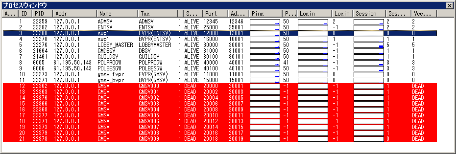

[トップ] [変更履歴]
[目次] [用語] | [AdmCli]
[ADMSV] [RSV]
| [VCE-Log] [VCEモニター]
プロセスウィンドウ

ウィンドウの説明
このウィンドウは、各ホスト上で動作している VCE monitor API によって管理する事の出来るプロセス群の状態を表示しています。
各項目の見出し列をクリックする事で、その項目でソートする事が出来ます。
また、各行は複数選択が可能で、一部コマンド以外は複数行を同時に選択して実行する事が出来ます。
各項目の説明
- Alert
- 設定した条件を満たした時に「！」マークが出現し、注意を促します。
- PID
- プロセスのUNIXプロセスIDです。(psコマンドで表示されるもの)
- Id
- admsv がプロセス毎に与えた一意のID番号です。ログ検索などで、対象プロセスの指定識別子として使用します。
- Addr
- プロセスが動作しているホストのIPアドレスです。
- Name
- プロセスの名前です。
'get_name'モニターコマンドで返された名前です。
サーバーを識別するための名前を返すようアプリケーションを作るとよいでしょう。
- Tag
- 管理用Tag。admsv 設定ファイル又はクライアントから自由に設定出来ます。
- State
- プロセスの状態を表します。DEAD,INIT,ALIVE の３つの状態があります。
DEAD,INIT の場合は行が赤く表示されます。
- DEAD: プロセスへのコネクションが張れない(プロセスが動いていないか、ネットワークが切断している)
- INIT: プロセスへのコネクションは張れているが、pingが帰って来ない(プロセスが起動しているが、止まっている、もしくは、vceのバージョンが違うとINITになる場合もある)
- ALIVE: プロセスが正常に稼働している。
- Type
- プロセスの種類。現在は、VCE を使用したプロセスである事を示す 1 しかありません。
- Port
- プロセスが使用しているサービスのポート。
これは、vce_tcpcontext_create()で一番最初に作られたサーバーコンテキストのポート番号を 示します。
- AdmPort
- 管理用のVCE-Monitorポート
- Ping
- プロセスへの ping 値です。（単位：ミリ秒）
アプリケーションレベルでの ping の為、数値はアプリケーションの状態に左右されます。vce_heatbeatの１回当たりの時間が長いと、この値も大きくなります。
- Ping グラフ
- Pingのグラフです。[ツール]-[設定]-[グラフ] で カスタマイズ可能です。
- Login
- VCE monitor APIを使用して得た、プロセスへの login 数です。 プロセスは、get_login モニターコマンドに反応するように作成されなければなりません。
- Login グラフ
- Loginのグラフです。[ツール]-[設定]-[グラフ] で カスタマイズ可能です。
- Session
- Portで示されたtcpcontextのコネクション数を返します。
- Session グラフ
- Session のグラフです。[ツール]-[設定]-[グラフ] で カスタマイズ可能です。
- VCEState
- 未決定
プロセスウィンドウの操作
プロセスウィンドウでは、以下の操作を行う事が出来ます。 プロセスウィンドウの操作は、ウィンドウメニューの[プロセス]から、またはプロセスウィンドウ上で右クリックする事によって現れるメニューから行う事が出来ます。
- ウィンドウの自動更新の切り替え
- ウィンドウ情報の自動更新のOn/Offを切り替えます。
- ウィンドウの更新
- ウィンドウ情報を更新します。
- コマンド実行
- モニターコマンドを実行します。コマンド結果は結果ウィンドウに出力されます。
右クリックで表示されるポップアップメニューでは、 「手動コマンド実行」と、各モニターコマンドのメニューがあります。 各モニターコマンドは、プロセスが実行する事の出来るモニターコマンドが一覧になっています。選択すると、ダイアログにモニターコマンドが入力された状態で表示されます。手動の場合は何も入っていないダイアログが表示されます。
- 登録コマンド実行
- 登録済みのモニターコマンドを実行します(未実装)。
n よく使うモニターコマンド（引数なども含めて）をあらかじめ登録しておくと、メニューから実行する事が出来ます。
- プロセスの起動/停止/再起動
- プロセスを起動/停止/再起動します。起動、再起動は起動コマンドの設定をあらかじめ行うか、admsv
サーバー設定ファイルで設定をしていなければなりません。
- タグの編集
- プロセスのTAGの編集をします。権限制限があります。（未実装）
- プロセスの作成／削除
- プロセスの作成、削除を行います。権限制限があります。（未実装）
- 起動コマンドの設定
- プロセスを起動する為の起動コマンドを設定します。これが正しく設定されていないとプロセスが起動しません。
Copyright 2000-2005 CommunityEngine Inc. All rights reserved.